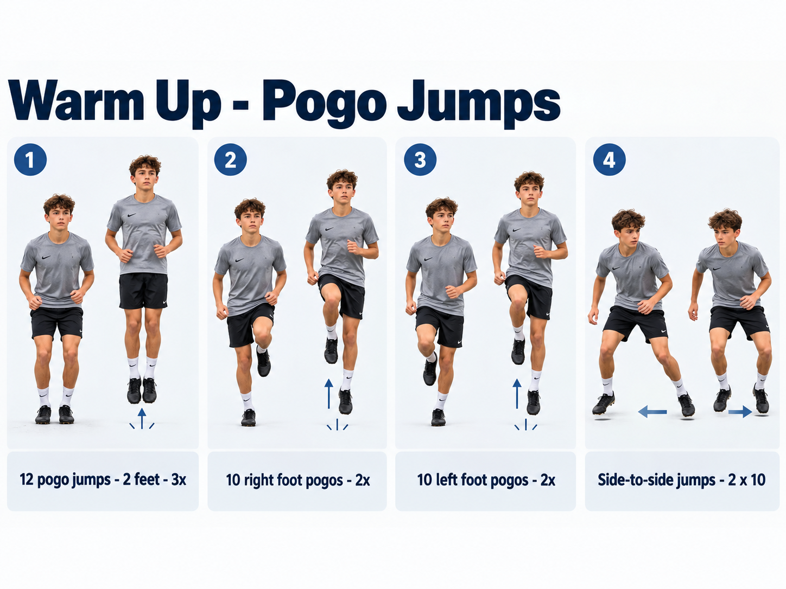

Activity 1 - Warm-Up
Pogo Jump Progression
- Two-foot pogos: 12 jumps x 3 sets
- Right-foot pogos: 10 jumps x 2 sets
- Left-foot pogos: 10 jumps x 2 sets
- Side-to-side jumps: 10 jumps x 2 sets
Coaching cues: stay tall, keep the jumps low, land quietly, and get off the ground quickly.
Purpose: prepare the feet, ankles and calves for the faster agility work that follows.